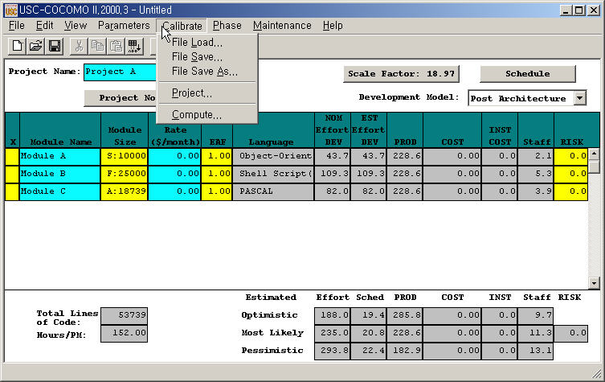
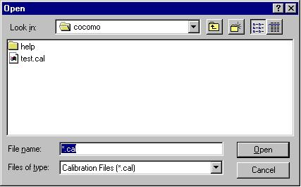
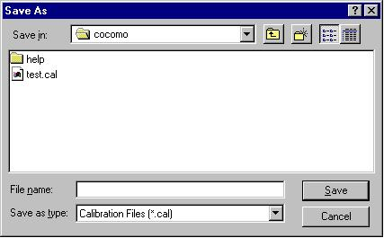
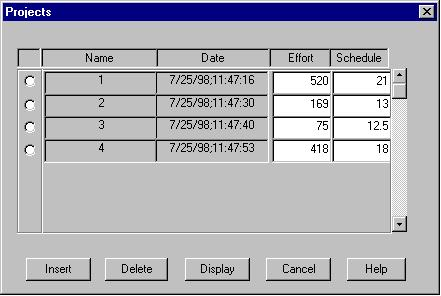
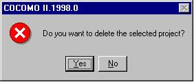
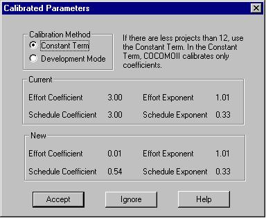

Chapter 5: Calibrate
Menu
COCOMOII now has the ability to archive
your own software project data. Using this data, COCOMOII will compute
various coefficients and exponents involved in the effort and schedule
equations. This will make your COCOMOII estimates even more reliable.
Each software project to be archived
is described as a complete COCOMOII project. It may include multiple modules,
each with their own SLOC estimate and EAF factors. In addition, a software
project consists of a name, date/time, actual effort and actual schedule.
The actual effort and actual schedule must be supplied by the COCOMOII
user. Entering revised values for effort and schedule are always possible.
Effort is given in units of person/months. Schedule is given in units of
months.

FIGURE 5-1 Calibrate Menu
5.1 File Load
The Calibrate File Load option is used
to retrieve a calibration project file as well as loading all project data
on the working project window(Figure5-2).

FIGURE 5-2 Load Calibration Dialog
Box
5.2 File Save
The Calibrate File Save command saves
the current calibration data in the file whose name was previously identified
using File Save As.

FIGURE 5-3 Save Calibration Dialog
Box
5.3 File Save As
The Calibrate File Save As command
stores the current calibration data as a *.cal file, which has a different
file name from the current file. This command works precisely the same
as the File Save As for *.est and *.mod files (see Figure 5-4).
FIGURE 5-4 Save As Calibration
Dialog Box
5.4 Project
A windows appears (shown in Figure
5-5) which displays the archived project data.
- To remove the window, click
on Cancel.
- To delete an existing entry, first
place an x at the leftmost end of the row and click on Delete. A warning
box appears as shown in Figure 5-6.
- To display the entire set of values
for an archived project, click on Display. Since the display of an archived
project eliminates the display of any existing CLEF data, a warning message
appears as shown in Figure 5-7.
- To insert a new archived project
from the CLEF, click on Insert.

FIGURE 5-5 Projects Dialog Box

FIGURE 5-6 Delete Warning Dialog

FIGURE 5-7 Display Warning Dialog
5.5 Compute
This command takes all of the data
that has been archived and uses it to compute new constant and exponent
values for the effort equation and similarly for the schedule equation.
There are two options to calibrate equation parameters. One is the Constant
Term and the other one is Development Mode. Those two options are explained
below in detail. They are displayed in this window and compared to the
values currently used by COCOMOII. To get COCOMOII to use these values,
click on Accept, as shown Figure 5-8.

FIGURE 5-8 Compute Dialog Box